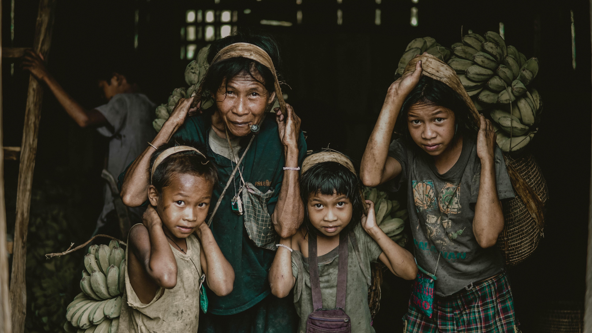
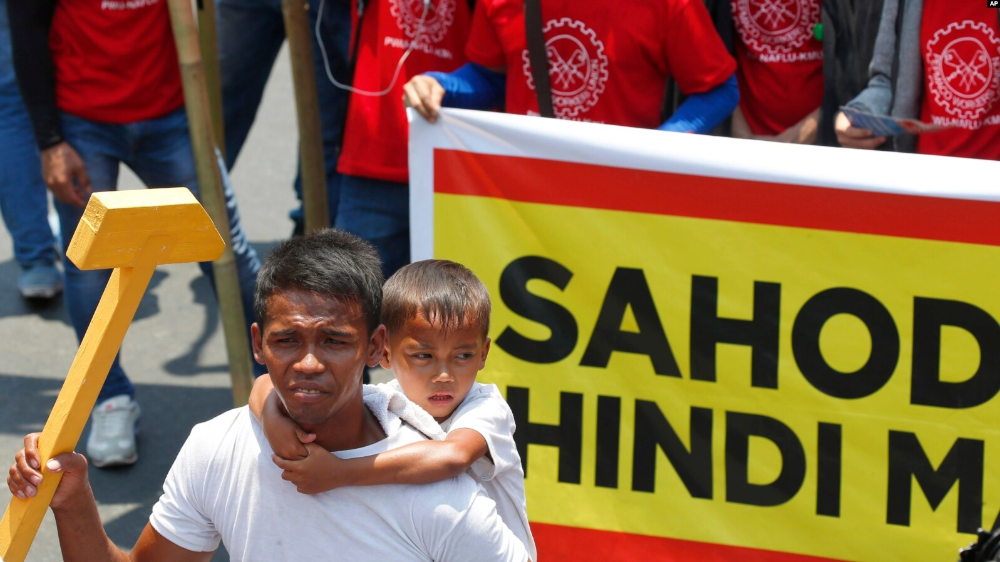
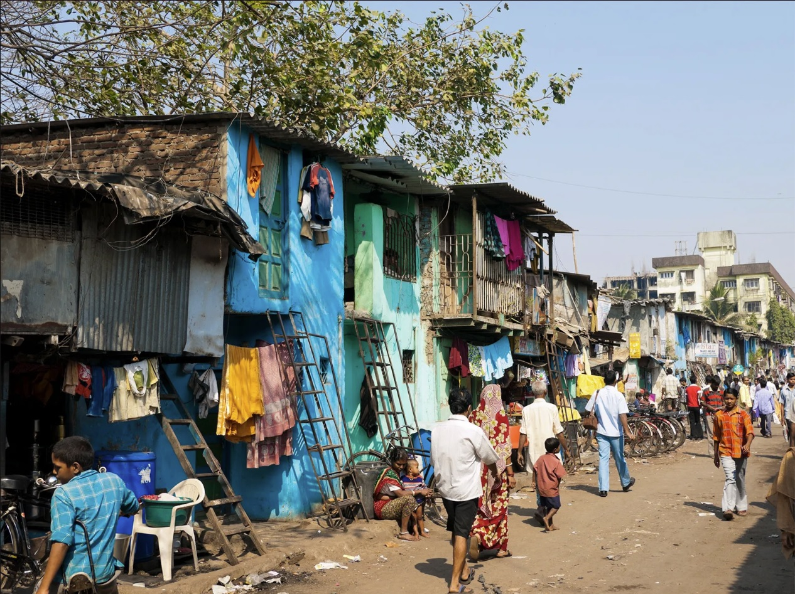
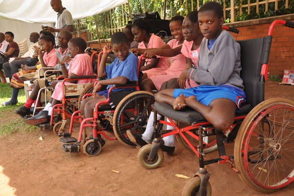

The types of Poverty
Cyclical Poverty
Cyclical poverty refers to poverty that is happening throughout the country but is limited in duration. This type of poverty is the inability to provide the necessities due to a national catastrophe, poor agricultural planning, shortage of resources, etc. Additionally, the prices rise due to scarcity of resources.
Collective Poverty
In comparison to Cyclical Poverty, Collective Poverty involves permanent insufficiency of resources to meet the means to provide necessities. This type of poverty may be transmitted from generation to generation, with parents passing their poverty to their children.
Collective Poverty is usually related to economic underdevelopment. The total resources of nations would be insufficient to support the population adequately even if resources are distributed equally.
Concentrated Collective Poverty
In areas with rich resources to provide basic needs to its population, there are particular demographic groups that are vulnerable to long-term poverty. In areas abandoned by industry, and in areas where agriculture or industry is inefficient and cannot compete profitably, there are found victims of concentrated collective poverty. These people, like those afflicted with generalized poverty, have higher mortality rates, poor health, low educational levels, and so forth when compared with the more affluent segments of society.
Case Poverty
Similar to Collective Poverty, Case Poverty is the lack of a group or individual to provide basic necessities for themselves and their families even in areas with relatively rich resources around them. This case is due to the individual's inability to gain resources mostly due to disability, mental health issues, chronic illness, etc.